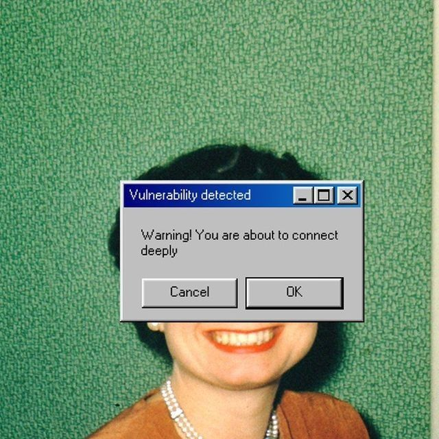

Sutarinee Jinasee

Summary
I am a hardworking and dedicated individual with experience in Civil Engineering.
Education
- High School Diploma, Wat Khemapirataram School, 2012
- Bachelor of Engineering in Civil Engineering, Thammasat University, 2016
- Master of Business Administration, Thammasat University, 2028
Work Experience
Quality Assurance Engineer - AESCON
2016 - 2018
- Conducted quality checks on construction materials and processes
- Ensured compliance with industry standards and regulations
Project Manager - PR Business Corp
2018 - 2026
- Managed end-to-end project delivery
- Coordinated with cross-functional teams
Skills
- Project Management
- Quality Assurance
- Construction Materials
Other Information
- Languages: Thai (Native), English (Intermediate)
- Hobbies: Reading, Traveling, Learning Languages, Guitar
- Contact